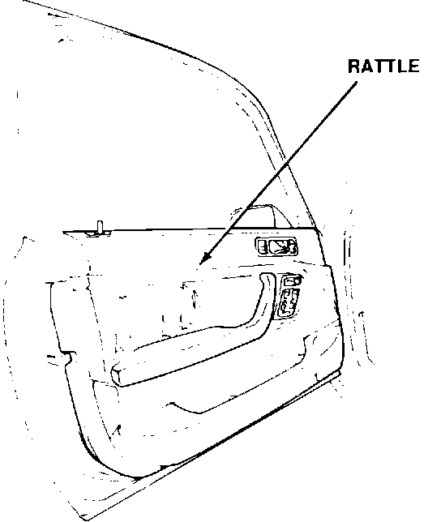
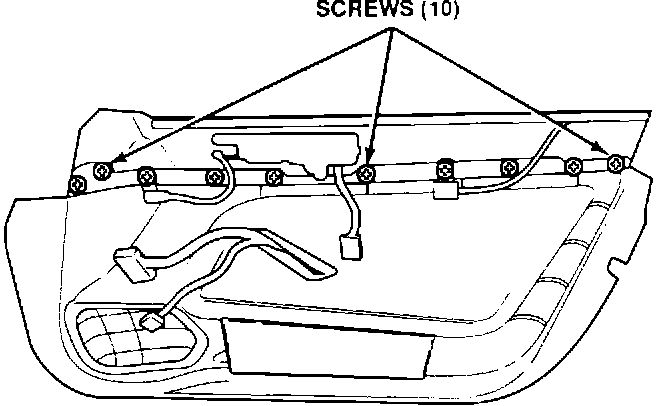

Door Panel Rattle
DOORSymptom:

Rattle from the door panel.
Probable Cause:
The screws that attach the upper door panel to the lower door panel are loose.
Corrective Action:
Tighten the screws.
1. Remove the door panel. See section 20 of the service manual.

2. Tighten the 10 screws that attach the upper portion of the door panel to the lower portion.
3. Reinstall the door panel.
WARRANTY INFORMATION:
Operation number: 843200
Flat rate time: 0.4 hours
Failed P/N: 67151-SP0-300ZZ
Defect code: 042
Contention code: B07